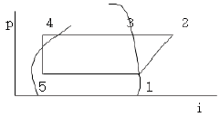
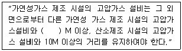
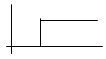
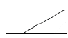
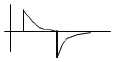
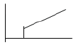
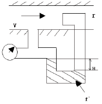

가스산업기사 (2006-05-14 기출문제)
1과목: 연소공학
1. 폭발등급에 대한 설명중 옳은 것은?
- 1등급은 안전간격이 1.6mm이상이며 메탄, 에틸렌이 여기에 속한다.
- 3등급은 안전간격이 0.5mm이하이며, 프로판,암모니아,아세톤이 여기에 속한다.
- 1등급은 안전간격이 0.6mm이상이며, 석탄가스,수소,아세틸렌이 여기에 속한다.
- 2등급은 안전간격이 0.6~0.4mm이며, 에틸렌,석탄가스가 여기에 속한다.
(정답률: 60%)

2. 천연가스의 일반적인 연소 특성에 대한 설명 중 가장 옳은 내용은?
- 지연성이다.
- 화염전파속도가 늦다.
- 폭발범위가 넓다.
- 연소시 많은 공기가 필요하다.
(정답률: 46%)
3. 아염소산염류나 염소산염류는 산화성 고체로서, 위험물로 분류된 가장 큰 이유는?
- 폭발성 물질이다.
- 물에 흡수되면 많은 열이 발생한다.
- 강력한 환원제이다.
- 산소를 많이 함유한 강산화제이다.
(정답률: 59%)
4. 목탄이나 코크스는 고체연료의 연소형태중 어느 연소에 가장 가까운가?
- 증발연소
- 표면연소
- 등심연소
- 내부연소
(정답률: 90%)
5. 다음 중 착화열에 대한 가장 적절한 표현은?
- 연료가 착화해서 발생하는 전 열량
- 연료1kg이 착화해서 연소하여 나오는 총 발열량
- 외부로부터 열을 받지 않아도 스스로 연소하여 발생하는 열량
- 연료를 초기온도로부터 착화온도까지 가열하는데 필요한 열량
(정답률: 69%)
6. 가스의 반응속도를 설명한 것 중 가장 거리가 먼 내용은?
- 반응속도상수는 온도에 비례한다.
- 일반적으로 촉매는 반응속도를 증가시켜준다.
- 반응은 원자나 분자의 충돌에 의해 이루어진다.
- 반응속도에 영향을 미치는 요인에는 온도, 압력 그리고 농도 등을 들수 있다.
(정답률: 55%)
7. 연료의 위험도를 바르게 나타낸 것은?
- 폭발범위를 폭발 하한값으로 나눈값
- 폭발 상한 값에서 폭발 하한값으로 뺀 값
- 폭발 상한값을 폭발 하한값으로 나눈 값
- 폭발범위를 폭발 상한값으로 나눈 값
(정답률: 75%)
8. 불완전연소에 의한 매연, 먼지 등을 제거하는 집진장치 중 건식 집진장치가 아닌 것은?
- 백필터
- 사이클론
- 멀티클론
- 사이클론스크레버
(정답률: 78%)
9. 연소에서 사용되는 용어와 정의가 가장 올바르게 연결된 것은?
- 폭발- 정상연소
- 착화점- 점화시 최대에너지
- 연소범위- 위험도의 계산기준
- 자연발화-불씨에 의한 최고 연소시작 온도
(정답률: 86%)
10. 연소에서 혼합비와 혼합기체 농도 표시에 대한 설명중 가장 올바른 것은?
- 이론 연공비는 이론 공기량과 같다.
- 당량비가 1보다 작을 때의 연소를 과농연소라 한다.
- 이론 공연비에 대한 실제 공연비의 비를 당량비라 한다.
- 연공비는 단위 질량의 공기에 대하여 공급되는 연료의 질량비이다.
(정답률: 39%)
11. 난류연소의 가장 큰 원인이 되는 것은?
- 연료의 종류
- 혼합기체의 조성
- 혼합기체의 온도
- 혼합기체의 흐름 형태
(정답률: 61%)
12. 일정압력하에서 -50℃의 탄산가스의 체적은 0℃에서의 몇 배가 되는가?
- 0.715
- 0.817
- 0.871
- 0.945
(정답률: 68%)
13. LPG를 연료로 사용할 때의 장점으로 옳지 않은 것은?
- 도시가스에 비하여 열용량이 크다.
- 발열량이 크다.
- 특별한 가압장치가 필요하다.
- 조성이 일정하다.
(정답률: 85%)
14. 가스의 특성에 대한 설명 중 가장 옳은 내용은? (문제오류로 복원중입니다. 보기의 정확한 내용을 아시는 분께서는 오류신고를 통하여 내용 작성 부탁드립니다. 정답은 3번입니다.)
- 염소는 공기보다 무거우며 무색이다.
- 질소는 스스로 연소하지 않는 조연성이다.
- 산화에틸렌은 분해폭발을 일으킬 위험이 있다.
- 복원중
(정답률: 86%)
15. 다음 중 공기비를 옳게 표시한 것은?
- 실제공기량/이론공기량
- 이론공기량/실제공기량
- 사용공기량/1-이론공기량
- 이론공기량/1-사용공기량
(정답률: 82%)
16. 공기 중 폭발 하한계 값이 가장 낮은 가스는?
- 수소
- 메탄
- 아세틸렌
- 일산화탄소
(정답률: 55%)
17. 어느 연소가스를 분석한 결과 질소:75V%, 산소:8V%,이산화탄소:10 V%, 일산화탄소: 7 V% 이었다. 이연소가스의 평균 분자량 약 얼마인가?
- 23.81
- 26.45
- 29.92
- 32.58
(정답률: 63%)
18. 나프타를 주원료로 열분해, 접촉분해, 부분연소 등으로 제조되는 가스는?
- 오일가스
- 수성가스
- 고로가스
- 오프가스
(정답률: 49%)
19. 프로판 30 V% 및 부탄70 V% 의 혼합가스 1L가 완전 연소하는데 필요한 이론공기량은 약 몇 L 인가?
- 10
- 20
- 30
- 40
(정답률: 60%)
20. 메탄올 96g과 아세톤 116g 을 함께 진공 상태의 용기에 놓고 기화시켜 25℃의 혼합 기체를 만들었다. 이때 전압력은? (단, 25℃에서 순수한 메탄올과 아세톤의 증기압 및 분자량은 각 각 96.5mmHg, 56mmHg 및 32, 58이다.)
- 76.3mmHg
- 80.3mmHg
- 152.5mmHg
- 170.5mmHg
(정답률: 69%)
2과목: 가스설비
21. 두께3mm내경 20mm 강관에 내압이 2kgf/cm 일때 원주 방향으로 강관에 작용하는 응력을 얼마인가?
- 3.33kgf/cm2
- 6.67kgf/cm2
- 3.33kgf/m2
- 6.67kgf/m2
(정답률: 74%)
22. 배관에서 관경이 큰 관과 관경이 작은관을 연결할때 주로 사용하는 것은?
- T(Tee)
- 레듀사(reduce)
- 플랜지( flange)
- 엘보우(Elbow)
(정답률: 75%)
23. 물 수송량이 6,000L/min 전양정이 45m 효율이 75% 인 터빈 펌프의 소요 마력은 약 몇 KW 인가?
- 40
- 47
- 59
- 68
(정답률: 58%)
24. 저온 재료의 요구 특성에 대한 설명중 옳지 않은 것은?
- 열팽창계수가 큰 것을 사용할 것
- 저온에 대한 기계적 성질이 보증될 것
- 내용물에 대한 내식성이 좋을 것
- 가공성 및 용접성이 좋을 것
(정답률: 73%)
25. LPG충전소 내의 가스 사용시설 수리에 대한 설명으로 옳은 것은?
- 화기를 사용하는 경우에는 설비내부의 가연성 가스가 폭발하한계의1/4이하인 것을 확인하고 수리한다.
- 충격에 의한 불꽃에 가스가 인화할 염려는 없다고 본다.
- 내압이 완전히 빠져 있으면 화기를 사용해도 좋다.
- 보울트를 조일때는 한쪽만 잘 조이면 된다.
(정답률: 88%)
26. 산소제조장치 중 액화된 공기를 비등점 차이를 이용하여 산소와 질소로 분리하여 산소를 채취하는 장치는?
- 여과기
- 흡수탑
- 팽창기
- 정류기
(정답률: 62%)
27. 증기압축식 냉동기에서 고온·고압의 액체 냉매를 교축작용에 의해 증발을 일으킬 수 있는 압력까지 감압시켜 주는 역할을 하는 기기는?
- 압축기
- 팽창밸브
- 증발기
- 응축기
(정답률: 81%)
28. 암모니아를 취급하는 설비의 재료에 대한 설명 중 가장 거리가 먼 내용은?
- 저온이나 상온에서는 강재를 침식하지 않는다.
- 고온·고압하에서 질화와 수소취성이 동시에 일어난다.
- 부식및 취성 방지를 위해 18-8스테인리스 강과 같은 재료를 사용한다.
- 직접 접촉하는 부분에는 내식성 재료인 동 및 동합금을 사용하여야 한다.
(정답률: 57%)
29. 냄새가 나는 물질(부취제)의 구비조건으로 옳지 않은 것은?
- 화학적으로 안정하여야 한다.
- 부식성이 없어야 한다.
- 토양에 대한 투과성이 낮아야 한다.
- 물에 녹지 않아야 한다.
(정답률: 82%)
30. 회전식 펌프에 대한 일반적인 설명 중 가장 거리가 먼 내용은?
- 고점성 액체는 적당하지 않다.
- 깃형과 기어형이 있다.
- 연속 회전하므로 토출액의 맥동이 적다.
- 용적식이다.
(정답률: 37%)
31. LPG 공급, 소비설비에서 용기의 크기와 개수를 결정할 때 고려할 사항으로 가장 거리가 먼 것은?
- 소비자 가구수
- 피크시의 기온
- 감압방식의 결정
- 1가구당 1일의 평균가스 소비량
(정답률: 69%)
32. 내용적이 500L, 압력이 12MPa이고 용기 본수는 120개 일 때 압축가스의 저장능력은 몇 m3인가?
- 3,260
- 5,230
- 7,260
- 7,580
(정답률: 66%)
33. 자동절체식 조정기를 사용할 때의 이점을 가장 잘 설명한 것은?
- 가스소비시 압력변동이 크다
- 수동절체방식보다 발생량이 크다
- 용기교환시기가 짧고 계획배달이 가능하다
- 수동절체방식보다 용기설치 본수가 많다
(정답률: 60%)
34. 정압기의 특성 중 기준유량이 Qs일때 2차 압력을 Ps에 설정하고 유량이 Q2로 변화했을 경우 2차 압력 P2가 Ps로부터 벗어나는 것을 의미하는 것은?
- 오프셋(offset)
- 락업(lock up)
- 쉬프트(shift)
- 스팬 (span)
(정답률: 72%)
35. 산소 압축기의 내부 윤활제로 주로 사용되는 것은?
- 물
- 유지류
- 석유류
- 진한 황산
(정답률: 88%)
36. 어떤 냉동기가 20℃의 물에서 -10℃의 얼음을 만드는데 톤당 50PSH 의 일이 소요되었다. 물의 융해열의 80Kcal/Kg 얼음의 비열을 0.5Kcal/Kg.℃라 할 때 냉동기의 성능 계수는 얼마인가?
- 30.⑤
- 3.32
- 4.15
- 5.17
(정답률: 57%)
37. 압연재나 단조재에서 비금속 개재물이 원인이 되어, 두 층 이상으로 벗겨지기 쉬운것을 무엇이라 하는가?
- 미생물 부식
- 공동(cavitation)
- 공식(pitting)
- 라미네이션(lamination)
(정답률: 70%)
38. 아래의 몰리에르 선도에서 증발기 내에서 기화된 냉매가 압축기의 흡입된 후 실린더에 의하여 압축되는 지점에 대해 가장 옳게 나타 낸 것은?

- 1-->2
- 2-->3
- 4-->5
- 5-->1
(정답률: 51%)
39. 플레어스텍 구조 중 역화 및 공기 등과의 혼합폭발을 방지하기 위하여 가스 종류 등에 따라 갖추어야 할 역화방지 장치의 구성 요소로서 가장 거리가 먼 것은?
- PILOT BUNNER
- LIQUID SEAL
- FLAME ARRESTOR
- VAPOR SEAL
(정답률: 37%)
40. 금속의 성질을 개선하기 위한 열처리 중 풀림(annealing)에 대한 설명으로 가장 거리가 먼 내용은?
- 냉간가공이나 기계가공을 용이하게 한다.
- 주로 재료를 연하게 하는 일잔적인 처리를 말한다.
- 가공 중의 내부응력을 제거한다.
- 불림과 다른 점은 가열 후 급격하게 냉각시키는 것이다.
(정답률: 66%)
3과목: 가스안전관리
41. 액화 염소 142g 을 기화시키면 표준상태에서 몇 L의 기체 염소가 되는가? (단, 염소의 분자량은 71로 한다.)
- 22.4
- 44.8
- 67.2
- 89.6
(정답률: 72%)
42. 용기 신규 검사후 16년 된 300L 용접용기의 재검사 주기는 ?
- 2년 마다
- 3년 마다
- 4년 마다
- 5년 마다
(정답률: 58%)
43. 도시가스 지하 배관에는 전기방식조치를 하여야 하며, 전위를 측정하기 위한 터미널(T/B)를 설치하여야 한다. 전위 측정용 터미널 설치간격으로 옳은 것은?
- 희생양극법에 의한 배관은 500M 이내
- 배류법에 의한 배관은 300M 이내
- 외부전원법에 의한 배관은 300M 이내
- 전위측정용 터미널은 전기방식 종류 및 배관길이에 관계없이 1 개소만 설치
(정답률: 63%)
44. 고압가스일반제조의 시설기준에 관한 안전 사항으로 ( )안에 알맞은 것은?

- 3
- 5
- 8
- 10
(정답률: 67%)
45. 충전용기를 차량에 적재운반 하는 경우에 대한 설명으로 옳지 않은 것은?
- 독성가스 운반 시 붉은 글씨로“위험고압가스 “독성가스”라는 경계표시를 한다.
- 충전용기와 질산은 동일한 차량에 적재하여 운반하지 않는다.
- 납붙임용기 또는 접합용기에 고압가스를 충전운반시 용기의 이탈방지를 위하여 보호망을 씌운 후 운반한다.
- 300KM 이상의 거리를 운행하는 경우에는 중간에 충분한 휴식을 취한 후 운행하여야 한다.
(정답률: 77%)
46. LP가스 용기를 제작하여 분체도료(폴리에스 테르계)도장을 하려 한다. 최소 도장 두께와 도장 횟수는?
- 25μm 1회 이상
- 25μm 2회 이상
- 60μm 1회 이상
- 60μm 2회 이상
(정답률: 68%)
47. 액화석유가스 충전소 내에 설치할 수 없는 시설은?
- 충전소의 관계자가 근무하는 대기실
- 자동차의 세정을 위한 자동세차시설
- 충전소에 출입하는 사람을 대상으로 한 자동판매기 및 현금자동지급기
- 충전소의 관계자 및 충전소에 출입하는 사람을 대상으로 한 놀이방
(정답률: 84%)
48. HCN 은 충전한 후 며칠이 경과하기 전에 다른 용기에 옮겨 충전하여야 하는가?
- 7일
- 30일
- 50일
- 60일
(정답률: 84%)
49. 산소 저장탱크의 주위에는 액상의 가스가 누출된 경우에 대비하여 방류둑을 설치해야 하는데 저장능력이 얼마 이상 일때 인가?
- 5톤 이상
- 500톤 이상
- 100톤 이상
- 3000톤 이상
(정답률: 49%)
50. 용기집합대가 설치된 특정고압가스사용시설의 고압가스설비에서 안전밸브를 설치하여야 하는 액화가스 저장능력의 기준은?
- 200Kg
- 300Kg
- 400Kg
- 500Kg
(정답률: 61%)
51. 겨울에 LP 가스 용기의밸브가 얼었을 경우 조치방법으로 가장 적절한 것은?
- 더운물(60℃)을 사용한다.
- 얼음을 깨고 사용한다.
- 가스토치로 녹여 사용한다.
- 40℃이하의 열습포로 녹여 사용한다.
(정답률: 76%)
52. 초저온 저장탱크의 내용적이 20,000L 일때 충전할 수 있는 액체 산소량은 몇kg 인가?
- 18,000
- 16,350
- 22,800
- 20,520
(정답률: 39%)
53. 가스의 폭발 상한계에 영향을 주는 요인으로 가장 거리가 먼 것은?
- 온도
- 가스의 농도
- 산소의 농도
- 부피
(정답률: 78%)
54. 폭명기로도 불리우며, 약 530℃이상에서 폭발적으로 반응 하여 폭음을 내는 가스는?
- 산소
- 수소
- 암모니아
- 메탄
(정답률: 75%)
55. 차량에 고정된 탱크에 의하여 가연성 가스를 운반할 때 비치하여야 할 소화기의 최소 수량은? (단, 능력단위는 고려치 않음.)
- 분말소화기1대
- 분말소화기 2대
- 포말소화기1대
- 포말소화기 2대
(정답률: 82%)
56. 도시가스 사용시설의 배관에 대한 가장 옳은 설명은?
- 입상관은 화기와 1M 이상의 우회거리를 유지하여야 한다.
- 관경 50MM 인 저압배관은 비파괴시험을 실시하지 않아도 된다.
- 배관의 접합은 모두 용접시공하여야 한다.
- 배관의이음부와 전기계량기와는 30cm이상의 거리를 유지하여야 한다.
(정답률: 41%)
57. 자기압력기록계로 최고사용압력이 중압인 도시가스배관의 기밀시험을 하고자 한다. 배관의 용적이 15m3일때 기밀유지시간은 몇 분 이상이어야 하는가?
- 24분
- 36분
- 240분
- 360분
(정답률: 72%)
58. 언전관리자의 업무범위 중 가장 거리가 먼 내용은?
- 종업원에 대한 인사 및 노무관리
- 가스시설의 안전유지
- 정기검사 결과 부적합 시설의 개선
- 안전관리규정 실시기록의 작성·보존
(정답률: 83%)
59. 액화 석유가스의 안전관리 및 사업법상 용어의 정의를 나타낸 것 중 옳은 것은?(오류 신고가 접수된 문제입니다. 반드시 정답과 해설을 확인하시기 바랍니다.)
- 저장설비: 액화 석유가스를 저장하기 위한 설비로서 저장탱크, 소형저장탱크 및 용기를 말한다.
- 저장탱크: 액화석유가스를 저장하기 위하여 지상또는 지하에 고정 설치된 탱크로서 그 저상능력이 3톤 이상인 탱크를 말한다.
- 충전설비: 용기 또는 차량에 고정된 탱크에 액화석유가스를 충전하기 위한 설비로서 충전기와 저장탱크에 부속된 펌프,압축기를 말한다.
- 충전용기: 액화석유가스의 충전질량의 3분의 1 이상이 충전되어 있는 용기를 말한다.
(정답률: 48%)
60. 도시가스의 총발열량이 10,500Kcal/m3이고 도시가스의 비중이 0.66인 경우 도시가스의 웨버지수(W.I)는?
- 17,500
- 12,925
- 10,500
- 6,300
(정답률: 67%)
4과목: 가스계측
61. 화씨[℉]와 섭씨[℃]의 온도눈금 수치가 일치하는 경우의 절대온도[k]는?
- 201
- 233
- 313
- 345
(정답률: 84%)
62. 가스미터의 종류 중 추량식 가스미터가 아닌 것은?
- 로터리피스톤식미터
- 오리피스미터
- 터빈식미터
- 벤츄리식미터
(정답률: 69%)
63. 시퀀셜 제어에 대한 설명 중 가장 거리가 먼 내용은?
- 개회로이다.
- 승강기,교통신호 등이 이에 해당한다.
- 제어결과에 따라 조작이 수동적으로 진행 순서에 따라 일방적으로 제어명령이 전해진다.
- 정해진 순서에 따라 가동 된다.
(정답률: 74%)
64. 액면 상에 부자의 움직이는 변위를 여러 가지 기구를 이용하여 지침을 움직여 액면을 측정하는 방식은?
- 플로트식 액면계
- 차압식 액면계
- 정전용량식 액면계
- 퍼지식 액면계
(정답률: 69%)
65. 막식 가스미터 고장의 종류 중 부동(不動)의 의미를 가장 올바르게 나타낸 것은?
- 가스가 크랭크축이 녹슬거나 밸브와 밸브시트가 타르(tar)접착 등으로 통과하지 않는다.
- 가스의 누출로 통과하나 정상적으로 미터가 작동하지 않아 부정확한 양만 측정 가능하다.
- 가스가 미터는 통과하나 계량막의 파손, 밸브의 탈락 등으로 미터지침이 작동하지 않는 것이다
- 날개나 조절기에 고장이 생겨 회전장치에 고장이생긴 것이다.
(정답률: 86%)
66. 보상도선,측온접점 및 기준접점,보호관 등으로 구성되어 있는 온도계는?
- 복사온도계
- 열전온도계
- 광고온도계
- 저항온도계
(정답률: 71%)
67. 어떤 비례 제어기가 50℃에서 100℃사이에 온도를 조절하는데 사용되고 있다. 만일 이 제어기기가 측정한 온도가 84℃에서 90℃ 일 때 비례대(propotional band)는 얼마인가?
- 10%
- 11%
- 12%
- 13%
(정답률: 55%)
68. 가스크로마토그래피에서 캐리어가스로 사용되지 않는 것은?
- O2
- H2
- He
- N2
(정답률: 59%)
69. 용적식 유량계에 해당되지 않는 것은?
- 루트식
- 피토관
- 오벌식
- 로터리피스톤식
(정답률: 51%)
70. 다음의 제어동작 중 비례, 적분동작을 나타 낸 것은?




(정답률: 77%)
71. 액주식압력계에 사용되는 구비조건으로 옳지 않은것은?
- 점도가 낮을것
- 혼합성분일것
- 밀도변화가 적을 것
- 모세관 현상이 적을 것
(정답률: 67%)
72. 압력계의 눈금이 1.2MPa 를 나타내고 있으며, 대기압이 750mmHg 일 때 절대 압력은 약 몇 KPa 인가?
- 1000
- 1100
- 1200
- 1300
(정답률: 53%)
73. 직접적으로 자동제어가 가장 어려운 액면계는?
- 유리관식 액면계
- 부력 검출식 액면계
- 부작식 액면계
- 압력 검출식 액면계
(정답률: 68%)
74. 그림과 같이 시차 액주계의 놓이H가60mm 일 때 유속 V[m/s]는 약 얼마인가? (단, 비중 r 와 r' 는 1과 13.6이고 ,속도계수는 1, 중력가속도는 9.8m/s2이다.)

- 1.08
- 3.36
- 3.85
- 5.00
(정답률: 47%)
75. 가스크로마토그래피에서 일반적으로 사용되지 않는 검출기는?
- TCD
- RID
- FID
- ECD
(정답률: 66%)
76. 가스누출 확인 시험지와 검지가스가 옳게 연결된 것은?
- 리트머스시험지-산성,염기성가스
- KI전분지- CO
- 염화파라듐지-HCN
- 연당지-할로겐가스
(정답률: 54%)
77. 가스분석용 검지관법에 있어 검지관의 검지 한계가 잘못 연결된 것은?
- 아세틸렌: 10 PPM
- 벤젠: 0.1 PPM
- 암모니아: 5 PPM
- 염소: 0.02 PPM
(정답률: 56%)
78. 대량 수용가에 적합하며 100~5,000m3/h의 용량 범위를 가지는 가스미터는?
- 막식 가스미터
- 습식 가스미터
- 마노미터
- 루츠미터
(정답률: 81%)
79. 가스크로마토그래피에서 이상적인 검출기의 구비조건으로 가장 거리가 먼 내용은?
- 안정성과 재현성이 좋아야 한다.
- 모든 분석물에 대한 감응도가 비슷해야 좋다.
- 용질량에 대해 선형적인 감응도를 보여야한다.
- 유속을 조절하여 감응시간을 빠르게 할수 있어야 한다.
(정답률: 43%)
80. 헴벨법으로 시료 가스를 분석하고자 한다. 시료가스 중 질소(N2)를 분석하는 방법은?
- 시료 가스 중 질소(N2)를 수산화칼륨 300g을 1L에 녹인 흡수액에 흡수시켜 가스부피의 감소량으로부터 분석한다.
- 시료가스 중 질소(N2)를 삼산화황을 약25% 함유하는 발열 황산 용액에 흡수시켜 시료 가스 부피의 감소량으로 분석한다.
- 시료가스 중 질소(N2)를 연소시켜 시료가스 부피의 감소량으로부터 분석한다.
- 흡수법 및 연소법으로 정량한 각 성분의 합계량을 100 으로부터 빼서 구한다.
(정답률: 38%)